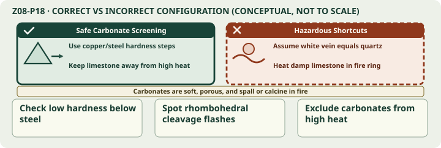

Z08-P18 · Rocks, minerals and materials · New manuscript
Calcite, Dolomite and Soft Carbonate Material Limits
Recognize soft carbonate minerals and rocks by rhombohedral cleavage and low hardness while avoiding field acid misuse and thermal failure.
When it applies · Southeastern Minnesota limestone beds, glacial pebbles, and mineralized veins.
Equipment · Copper coin, steel nail, hand lens.

Actions
- Separate soft calcite (Mohs 3, scratched by copper coin) and dolostone (Mohs 3.5–4, scratched by steel) from hard quartz veins that scratch steel.[R04, R16]
- Inspect crystal veins for slanted three-direction rhombohedral cleavage flashes without carrying hazardous strong laboratory acids into the field.[R04]
- Exclude carbonate stone from high-heat fire linings or heated cookware contact because intense heat calcines lime and causes cracking and caustic dust.[R13, R16]
Failure recognition · Confusing white calcite veins with quartz leads to rapid tool failure, while overheating damp limestone creates exploding chips and caustic quicklime ash.[R04, R13, R16]
Verify · Hardness check against steel and copper cleanly separates soft carbonate minerals from hard silica.[R04]
Stop or change course · Stop heating carbonate stones or using unverified acid tests without protective eye gear and controlled laboratory protocols.[R04, R13]
Evidence and editorial notes
- R04 · USGS · Collecting Rocks: Rock Classes and Mineral Property Basics (USGS GIP)
- Section: Hardness, luster, streak, and fracture vs cleavage · Conditions: Non-destructive mineral observation with simple field cues
Support: Scratch hardness, unglazed streak, luster, and fracture-versus-cleavage patterns narrow candidate mineral groups.
Limitations: Field scratch checks cannot establish chemical purity, trace heavy metals, or absence of hazardous fibers. · Conflicting evidence: Color alone is unreliable across quartz, calcite, and feldspar varieties.
Editorial note: Core Z08 mineral screening basis. · Specialist reviewer: Mineralogist
Primary source · checked 2026-11-25
Current assessment · A04-R04 (2026-11-25) · Bounded support confirmed from an alternate source (A04): The properties are identification clues. A record of an existing surface is preferred and a destructive field test cannot establish use safety. Limits: Specialist review PENDING (Mineralogist); publication HOLD. All release decisions pending. - R13 · National Park Service · Rocks and Minerals Geological Overview (Current web edition)
- Section: Rocks and Minerals overview · Conditions: Unrated stones near a fire or during thermal cycling
Support: Use agency-approved fire facilities and keep people away from cracking or shifting material.
Limitations: Editorial avoidance. The cited geology overview does not establish a safe rock type, moisture test or heating threshold. · Conflicting evidence: Conditions are recorded in the A03 audit.
Editorial note: Reinforces Z03/Z08 wet-rock spalling stop. · Specialist reviewer: Geologist and fire safety reviewer
Primary source · checked 2026-11-25
Current assessment · A04-R13 (2026-11-25) · Open: support partial or missing (A04): No general authorization of heated rock or context for cracking. Retain hazard avoidance as editorial and use site fire orders and material review for prescriptions. Limits: Specialist review PENDING (Geologist and fire safety reviewer); publication HOLD. All release decisions pending. - R16 · Minnesota DNR · Rocks and Minerals of Minnesota Educational Guide (Current web edition)
- Section: Sedimentary limestone, sandstone, and shale permeability · Conditions: Southeastern Minnesota karst, bluff, and river-valley sedimentary strata
Support: Sandstone, limestone, and shale differ sharply in cementation, porosity, and fissility, governing weathering and cliff instability.
Limitations: Karst bluffs and fractured shales shed rockfall unpredictably; visual inspection cannot certify slope or load stability. · Conflicting evidence: None noted.
Editorial note: Covers Upper Midwest sedimentary rock hazards. · Specialist reviewer: Engineering geologist
Primary source · checked 2026-11-25
Source lineage · New manuscript (Z08 P16 mineral properties) · Classification · New manuscript.